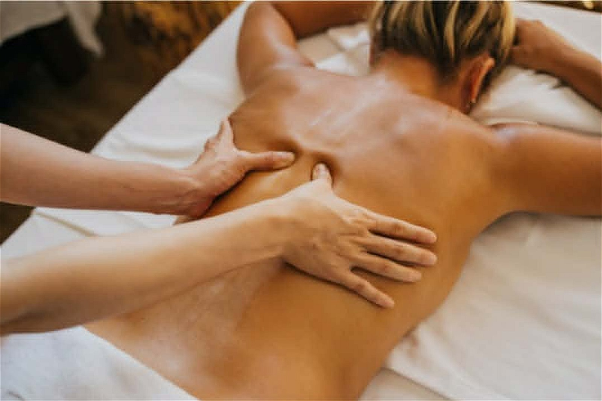

Gyúró, izomlazító masszázs
A mindennapi stressz, az ülőmunka, a fizikai terhelés és a helytelen testtartás gyakran vezet izomfeszüléshez, fájdalomhoz és mozgásbeszűküléshez. A gyúró, izomlazító masszázs célja a letapadt, feszes izmok fellazítása, a vérkeringés fokozása és az izmok regenerációjának támogatása.
A kezelés segíthet csökkenteni a nyak-, váll- és derékfájdalmakat, javíthatja a mozgás szabadságát, valamint hozzájárulhat a jobb közérzethez és a fizikai teljesítményhez. Ideális választás ülőmunkát vagy fizikai munkát végzőknek, sportolóknak és mindazoknak, akik izomfeszüléssel vagy túlterheléssel küzdenek.